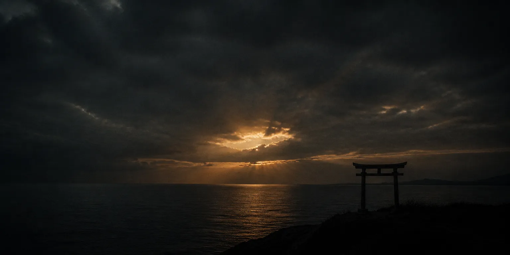

01
倒數
站在房間靠近門的地方，背對著門外，以被迫的姿態迎接未知。破碎的鏡子映著滄桑的面容，踏出門外的那一刻，遺憾與徒勞無功一起啟動了倒數。
我們一邊學會妥協，一邊把真正想要的生活藏好。十首歌記下那些不漂亮、卻確實走過來的日子，也留一點位置給喘息、相遇和還沒完成的答案。
站在房間靠近門的地方，背對著門外，以被迫的姿態迎接未知。破碎的鏡子映著滄桑的面容，踏出門外的那一刻，遺憾與徒勞無功一起啟動了倒數。
跟家人告別，去遙遠的地方求學或生活。成為一個獨自前進的大人以前，我們都曾是被牽掛、被祝福的孩子。

成長總伴隨著代價。身邊只剩同事，飯桌上只剩認識的人，路上只剩自己的影子。捨棄的到底是什麼？

現實打擊得體無完膚時，我們暫時躲進記憶裡。逃避不一定漂亮，但有時只是想替自己留下一小段安寧。

白天的妥協，是戴上社會化面具，執行體制裡的生存法則；夜幕降臨後，被壓抑的真實自我用放肆找回平衡。成為雙面人不是虛偽，是我們暫時活下來的方法。
躺在床上盯著天花板，理想失去形狀，身分認同與經濟壓力輪流靠近。我們還能不能在這個分歧的世界裡，活出一點不同？

認知到自己的渺小不是錯誤，而是一種醒來。當我們開始替真正渴望的事物爭取，微小也能變成繼續往前的力量。

未來的道路荊棘滿佈，我們仍相信相遇的瞬間。那份連結像黑暗街道上的光，讓彼此有地方停一下。

世界糟糕如荒漠，我們仍要緊握命運，不再沈默。帶著執著與溫柔，和珍惜的事物一起走到最後一分鐘。

就算沒有抵達終點、答案或理想生活，我們仍能感覺、選擇與珍惜。把方向握回手裡，接受人生未完成，也繼續往前。

2023 年，我們把迷惘唱出來。第一張專輯的 12 軌、完整歌詞與演出照片，放在另一頁慢慢看。
歌詞壓克力板、鑰匙圈和兩款 T-Shirt，集中放在周邊頁。